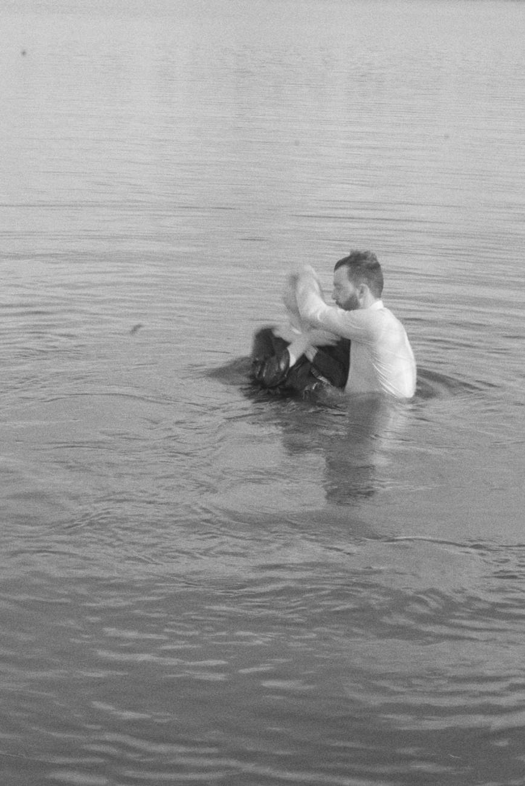
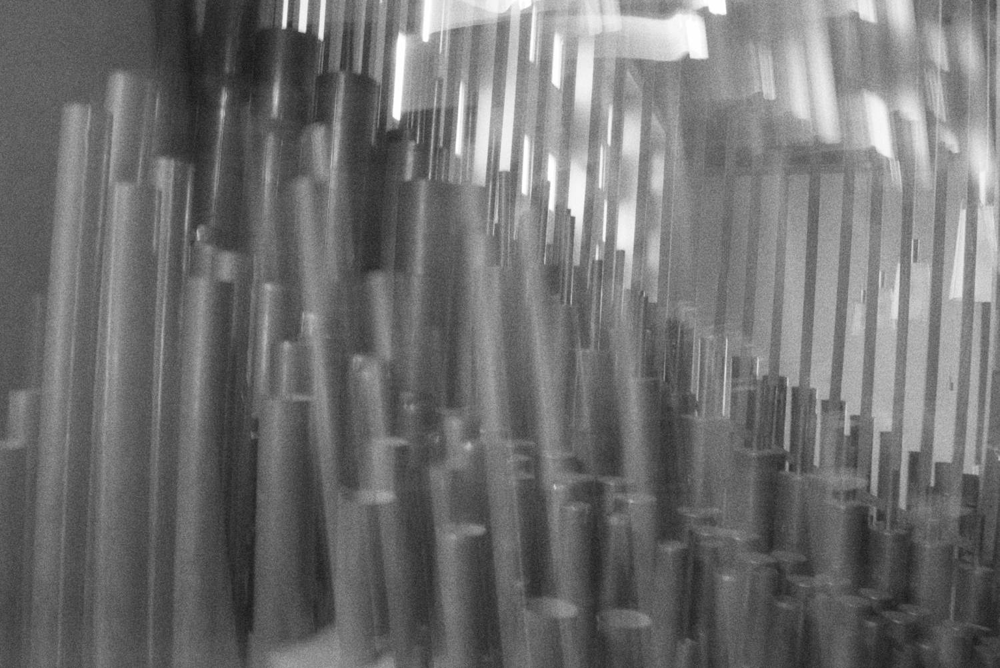
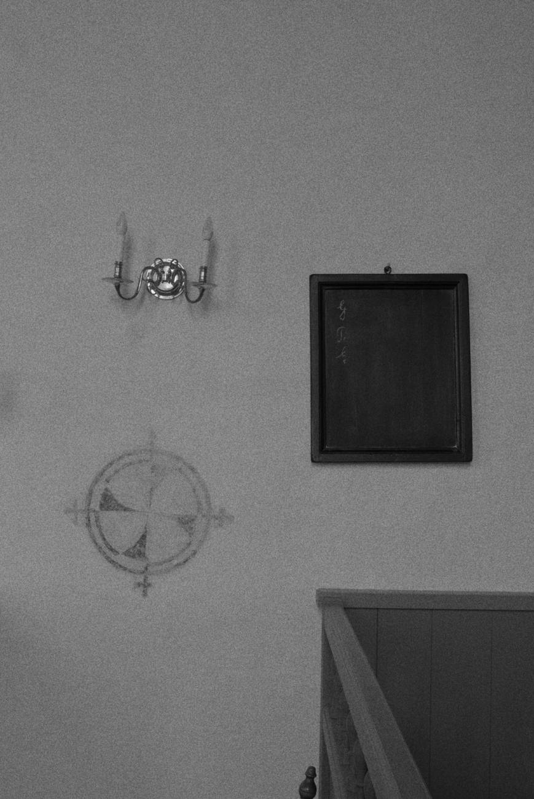
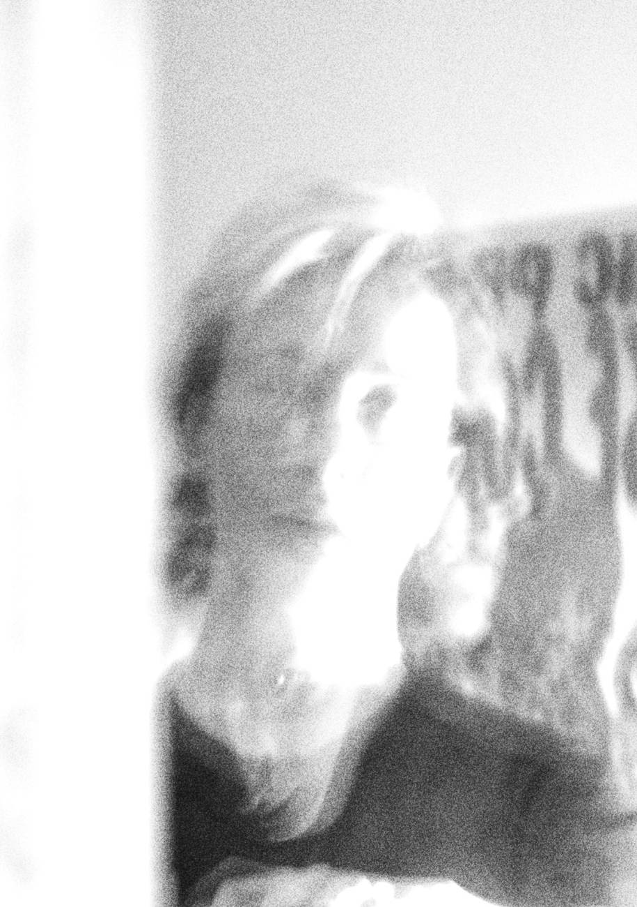

Reiteration
pipes / air / room
the fifth is a little too small, the third is true.


wind, then nothing, then wind. a copy of a copy of a copy.

1/4 comma — 696.6 ct — the wolf lives in the room.
pipes → sphere → room as instrument. what the noise remembers.

the image decays; the sound stays in the walls.